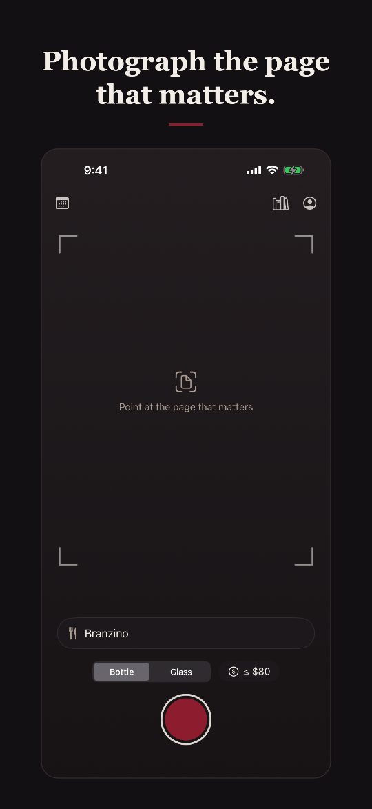
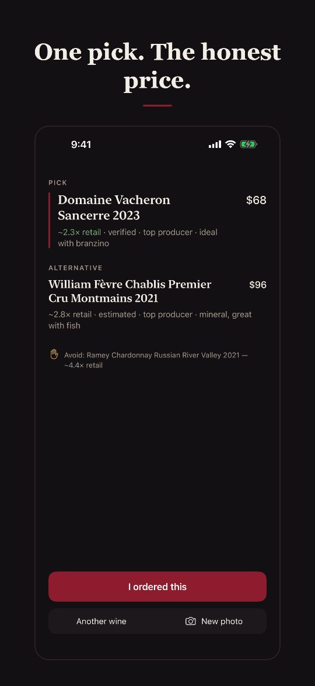
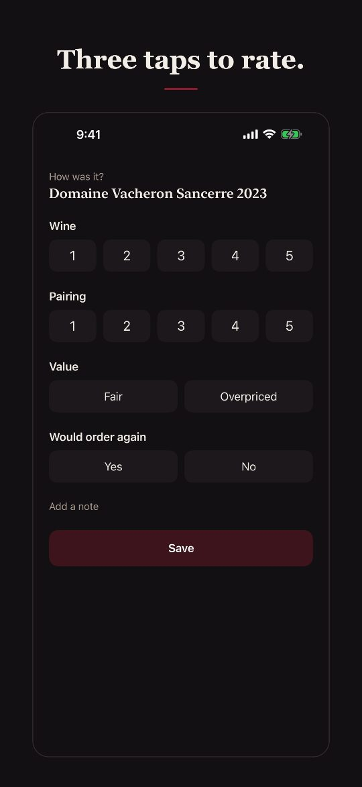
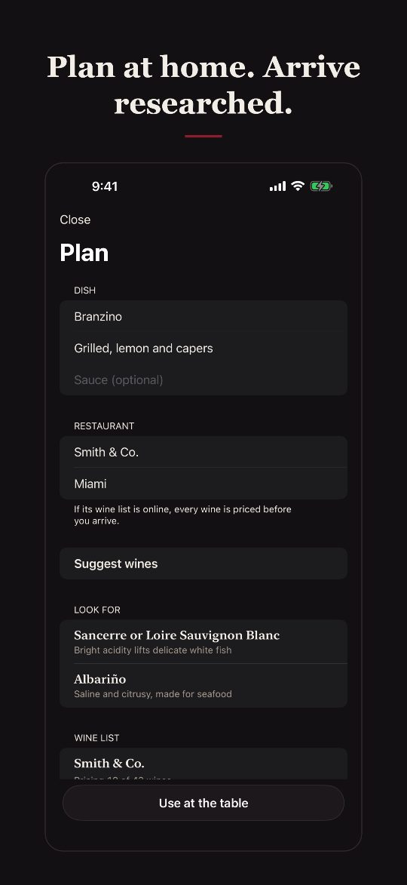
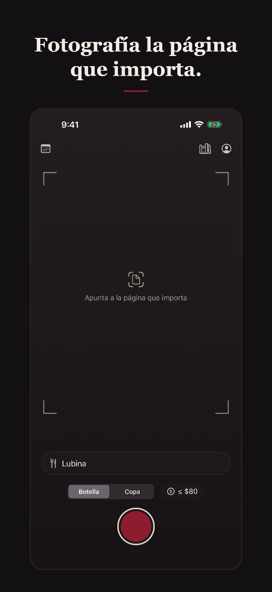
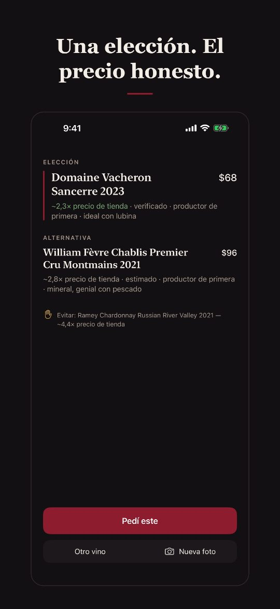
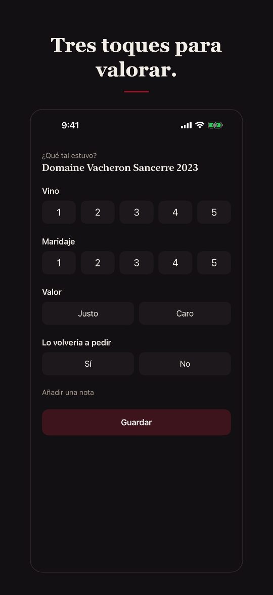
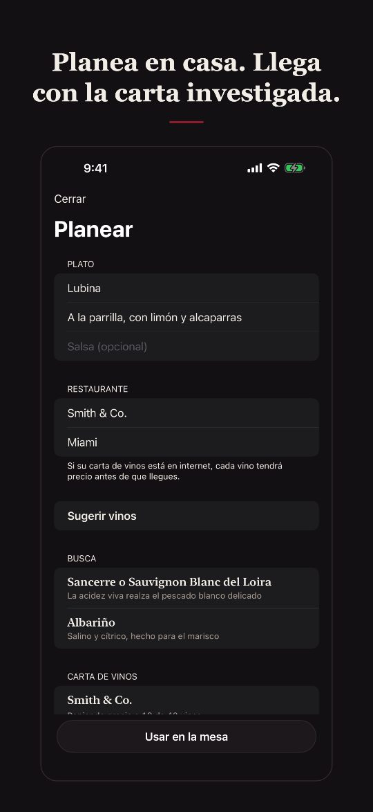

Photograph the page of a restaurant's wine list and Wine Selector gives you one pick in about 20 seconds: the wine that suits your dish best and is marked up least over its real store price.
Why it helps
One answer, not a lecture. One pick, with one line of reasons. A second choice appears only when it's genuinely close.
The real price. Each wine shows its markup over store price, like "~2.3× retail", and whether that price was verified from a store listing or only estimated.
A warning on the worst deal. The most overpriced bottle on the page gets a small "Avoid".
It learns your taste. Rate what you drank in three taps. Your library grows, and future picks lean towards what you liked.
Private. Your meals and ratings are yours, shared only with the household members you invite.
Get started (2 minutes)
On your iPhone, install TestFlight from the App Store. It's Apple's free app for apps that are still being tested.
Open the invitation link from the email and tap Accept, then Install.
Open Wine Selector and tap Sign in with Apple. The app asks Apple only for your name, not your email.
Optional: in Profile, add the styles, regions and producers you like, and your usual budget.
At the restaurant


Open the app. It starts on the camera.
Type the dish, or tap a recent one. Choose Bottle or Glass, and a budget if you have one: up to $100, $200, $400, $600, or no limit.
Photograph the one page of the list that matters: straight on, filling the frame.
Read the pick. Tap any wine to see its store price, where and when that price was found, and why it scored as it did.
Tap I ordered this, or Another wine if you chose differently.
Several dishes at the table? In the wine's details, Deeper analysis finds one bottle for everyone.
After the meal

A reminder comes about three hours later. Three taps: how good the wine was, how well it went with the food (pairing), whether the price was fair, and whether you'd order it again. Everything you rate builds your Library.
Before you go (optional)

In Plan, enter the dish and the restaurant. You get the styles that suit the dish, and if the restaurant's list is online, every wine on it is priced ahead of time, so the pick at the table is instant. You can also let the app research reservations it finds in your calendar.
Share with your partner
Profile → Household → Create, then Invite someone to get a code. Your partner enters it under Join. You then see each other's ratings; nobody else does.
Tips
One page per photo works best. Good light helps; dim restaurants are fine if the text is sharp.
No signal? The photo waits in a queue and is sent as soon as you're back online.
By the glass, the markup is worked out per bottle: five glasses to a bottle.
New versions arrive through TestFlight, which can install them automatically. If the app ever says it has expired, open TestFlight and install the newest build.
Fotografía la página de la carta de vinos de un restaurante y Wine Selector te da una elección en unos 20 segundos: el vino que mejor acompaña tu plato y que menos se aleja de su precio real de tienda.
Por qué ayuda
Una respuesta, no una clase. Una elección, con una línea de razones. Solo aparece una segunda opción cuando de verdad está cerca.
El precio real. Cada vino muestra su margen sobre el precio de tienda, como "~2,3× precio de tienda", y si ese precio está verificado en una tienda o solo estimado.
Un aviso sobre la peor compra. La botella con más margen de la página lleva un pequeño "Evitar".
Aprende tus gustos. Valora lo que bebiste en tres toques. Tu biblioteca crece y las próximas elecciones se inclinan hacia lo que te gustó.
Privada. Tus comidas y valoraciones son tuyas; solo las ven los miembros del hogar que invites.
Para empezar (2 minutos)
En tu iPhone, instala TestFlight desde la App Store. Es la app gratuita de Apple para apps que aún están en pruebas.
Abre el enlace de invitación del correo y toca Aceptar y luego Instalar.
Abre Wine Selector y toca Iniciar sesión con Apple. La app solo pide a Apple tu nombre, no tu correo.
Opcional: en Perfil, añade los estilos, regiones y productores que te gustan y tu presupuesto habitual.
En el restaurante


Abre la app. Empieza en la cámara.
Escribe el plato o toca uno reciente. Elige Botella o Copa, y un presupuesto si lo tienes: hasta $100, $200, $400, $600 o sin límite.
Fotografía la página de la carta que importa: de frente y llenando el encuadre.
Lee la elección. Toca cualquier vino para ver su precio de tienda, dónde y cuándo se encontró ese precio y por qué obtuvo esa puntuación.
Toca Pedí este, u Otro vino si elegiste otro.
¿Varios platos en la mesa? En los detalles del vino, Análisis a fondo busca una botella para todos.
Después de comer

Unas tres horas después llega un recordatorio. Tres toques: lo bueno que era el vino, lo bien que acompañó la comida (maridaje), si el precio fue justo y si lo volverías a pedir. Todo lo que valoras forma tu Biblioteca.
Antes de ir (opcional)

En Planear, escribe el plato y el restaurante. Verás los estilos que van con el plato y, si la carta del restaurante está en internet, cada vino se investiga y se le pone precio de antemano, así la elección en la mesa es instantánea. También puedes dejar que la app investigue las reservas que encuentre en tu calendario.
Compártela con tu pareja
Perfil → Hogar → Crear y luego Invitar a alguien para obtener un código. Tu pareja lo escribe en Unirse. A partir de ahí veis las valoraciones del otro; nadie más.
Consejos
Una página por foto funciona mejor. La buena luz ayuda; un restaurante oscuro no es problema si el texto se lee nítido.
¿Sin cobertura? La foto espera en cola y se envía en cuanto vuelvas a tener conexión.
Por copa, el margen se calcula por botella: cinco copas por botella.
Las versiones nuevas llegan por TestFlight, que puede instalarlas sola. Si la app dice que ha caducado, abre TestFlight e instala la versión más reciente.